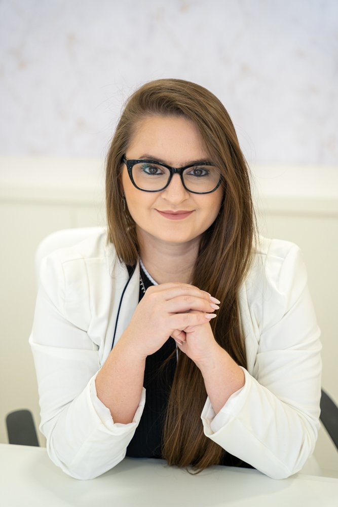
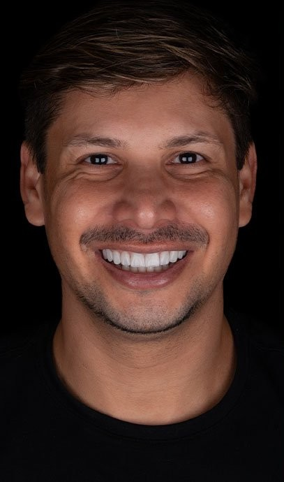
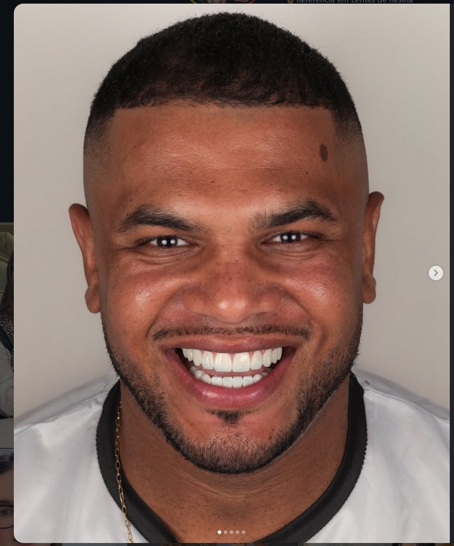
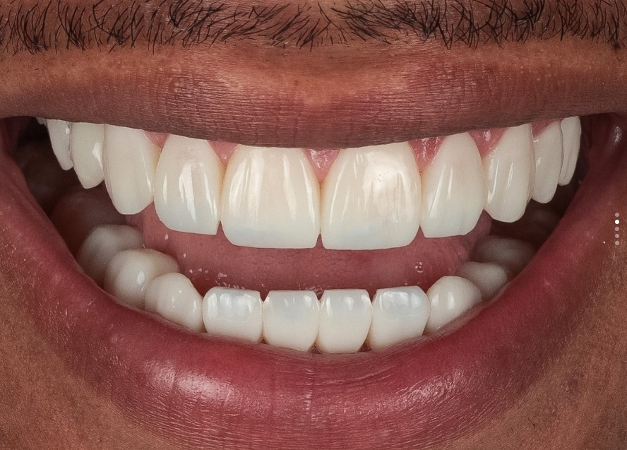
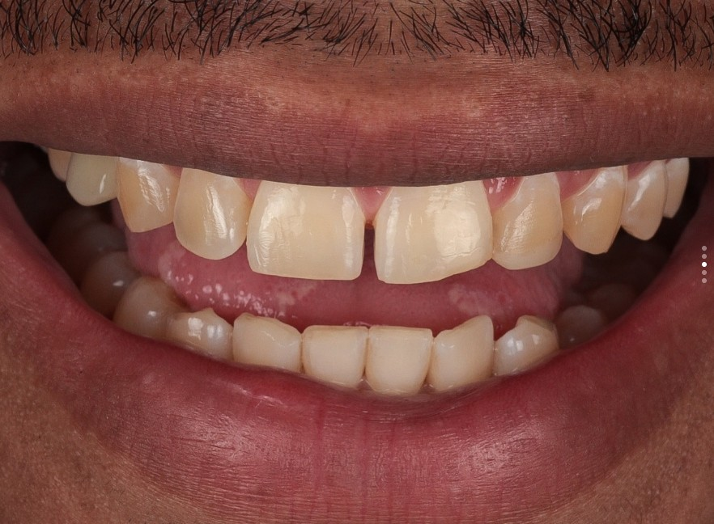

Lentes em Resina Estratificada
Cada caso é planejado de forma individual, entregando resultados de excelência com naturalidade, brilho e longevidade no tratamento.
Dra. Adrieli Pereira - CROSP 106703 · Martins Clinic Campinas
Deseja ter um sorriso renovado com excelência e naturalidade com as Lentes em Resina? Descubra como a minha técnica traz resultados incríveis, devolvendo a autoestima de sorrir novamente com segurança.
Ver Casos
Conheça mais sobre mim · Responsável Técnica Martins Clinic Odontologia
Doutora Adrieli Pereira (CROSP 106703) é cirurgiã-dentista há mais de 10 anos, iniciou muito cedo sua carreira na área odontológica. A minha missão como profissional é devolver autoestima e confiança em si mesmo para os meus pacientes através da minha técnica de Lentes em Resina naturais. Cuidando das pessoas com muita ética e zelo, ao longo de muitos anos eu recebi muitas histórias diferentes no meu consultório, isso fez cada vez mais eu me apaixonar pelo meu trabalho, que é transformar vidas através do sorriso.
Agende sua consulta comigo
Procedimentos que realizamos no consultório
Cuidamos de você com todo carinho e atenção, personalizando seu tratamento de forma assertiva e eficiente para unir estética e função mastigatória.
Cada caso é planejado de forma individual, entregando resultados de excelência com naturalidade, brilho e longevidade no tratamento.
Correção estética de formato, cor, proporção e fechamento de diastemas com preservação máxima da estrutura dental saudável.
Protocolos personalizados em consultório e supervisionados para iluminar o sorriso com segurança e conforto.
Transformação do sorriso que alia beleza com naturalidade à plena funcionalidade mastigatória e harmonia facial.
Limpeza profunda e polimento técnico periódico para preservar o brilho, a textura e a longevidade das suas lentes.
Temos uma equipe pronta para te atender na Martins Clinic Odontologia (CROSP 028690) com ética, carinho e atenção.
Casos planejados e executados pela Dra. Adrieli Pereira
Cada caso foi planejado de forma individual, desta forma temos resultados de excelência com naturalidade e longevidade no tratamento. Atenção: os casos abaixo foram planejados e executados pela Dra. Adrieli Pereira, estão protegidos pelos termos da lei de propriedade de imagem.





Comparativo Real · Antes & Depois
Arraste o comparador ao lado para observar de perto a anatomia, o fechamento de diastemas e o brilho natural das Lentes em Resina Estratificada planejadas e executadas pela Dra. Adrieli Pereira (CROSP 106703).
Mande uma mensagem para nós no WhatsAppAvaliações dos meus pacientes · Nota Máxima Google 5.0 ★
“Estamos com nota máxima no Google.
Veja o que dizem nossos pacientes.”
“Eu amo a Dra Adrieli, além de uma profissional incrível, ela é extremamente humana. Ela me devolveu minha auto estima. Não é só uma doutora maravilhosa, é uma grande amiga! Sempre vou indicar o trabalho dela!”
“As definições de "impecável" foram atualizadas com sucesso! Dra. Adrielli é uma profissional impecável, recomendo a todos. E a nova clínica ficou uma maravilha! Sucesso, Dra!!!”
“Como não amar o trabalho e a pessoa da Dra. Adrieli! 😍 Trabalho maravilhoso como sempre! Parabéns por ser tão exigente com a sua entrega! Obrigada pelo bom atendimento e carinho de sempre!”
“Fiz um procedimento com ela há pouco tempo! Pesquisei bastante por um profissional competente... achei. Simplesmente amei o trabalho dela. O consultório é tudo de primeira, ela foi super simpática e atenciosa aos detalhes. Recomendo de olho fechado e sorriso aberto! :)”
“Maravilhoso o atendimento e o cuidado com o paciente do começo ao fim! E o resultado é maravilhoso, ameiii”
“Sem palavras para descrever o tanto que estou satisfeito com a minha experiência. A Dra. Adrieli Pereira super atenciosa e com as mãos de fada super leve!”
“Uma excelente profissional, entrega tudo que promete e um ambiente impecável!!!”
“Trabalho excelente, prestação de serviço honesta e confiável com preço justo.”
“Local de fácil acesso e possui estacionamento para clientes na porta.”
Perguntas Frequentes · Aqui você encontra as principais dúvidas
Os tratamentos estéticos e de Lentes em Resina Estratificada são realizados de forma particular, pois utilizamos resinas de altíssima performance e dedicamos tempo exclusivo ao planejamento individual de cada sorriso. Entre em contato pelo WhatsApp para conhecer nossas condições facilitadas.
Não! A técnica de Lentes em Resina da Dra. Adrieli Pereira é minimamente invasiva, indolor e conduzida com todo carinho, zelo e conforto do início ao fim.
Após a finalização do tratamento você terá funcionalidade mastigatória normal. Recomendamos apenas evitar morder objetos muito rígidos (como gelo ou tampas) e manter os cuidados habituais de higiene.
Na grande maioria dos casos não há necessidade de desgastes dentais agressivos. Trabalhamos com técnica aditiva estratificada que preserva ao máximo a estrutura biológica saudável do seu dente.
Higienização diária com escova de cerdas macias, uso regular do fio dental, evitar pastas abrasivas e realizar o retorno periódico ao consultório para profilaxia e polimento de manutenção.
Cada caso é planejado de forma individualizada. Em conformidade com as diretrizes do CRO/SP, o investimento exato é apresentado após a avaliação clínica personalizada com a Dra. Adrieli Pereira.
Martins Clinic Odontologia · Jardim Guanabara · Campinas SP
Todos os procedimentos são realizados por profissionais experientes, focados em proporcionar resultados de alto impacto e personalizados para suas necessidades. Dê o primeiro passo rumo à sua melhor versão.
Agendar consulta pelo WhatsAppLocalização (Estacionamento na porta)
R. Dr. Barbosa da Cunha, 754 · Jardim Guanabara, Campinas - SPHorários de Atendimento
Seg a Sex: 8:30h às 18:30h · Sáb: 8:00h às 14:00hFale Conosco / WhatsApp
+55 19 98196-3061